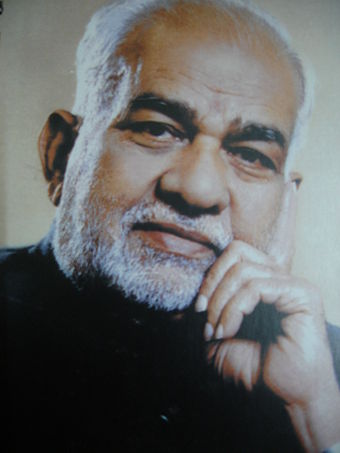
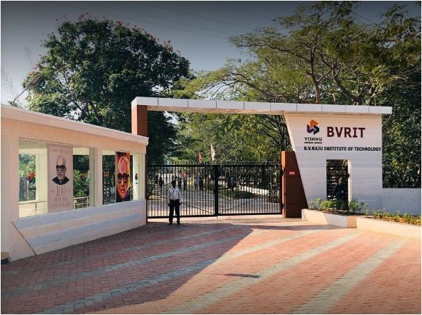
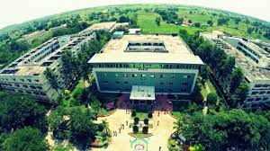
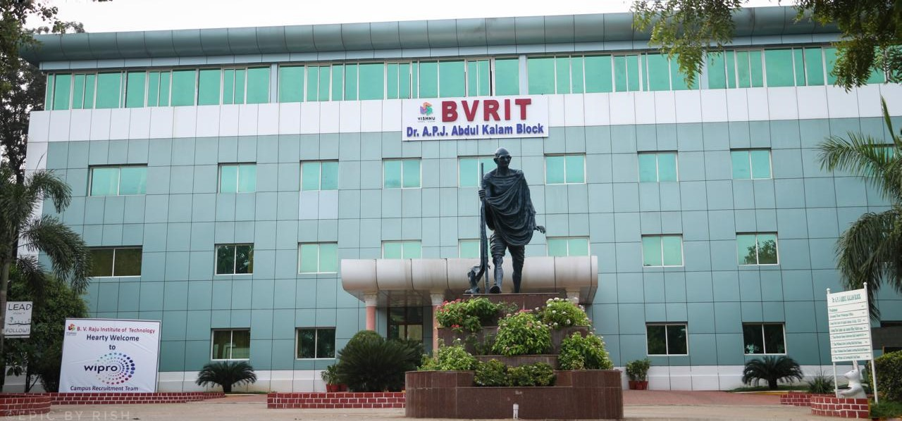
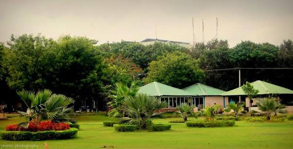
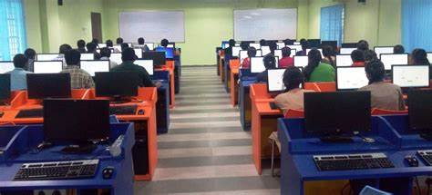
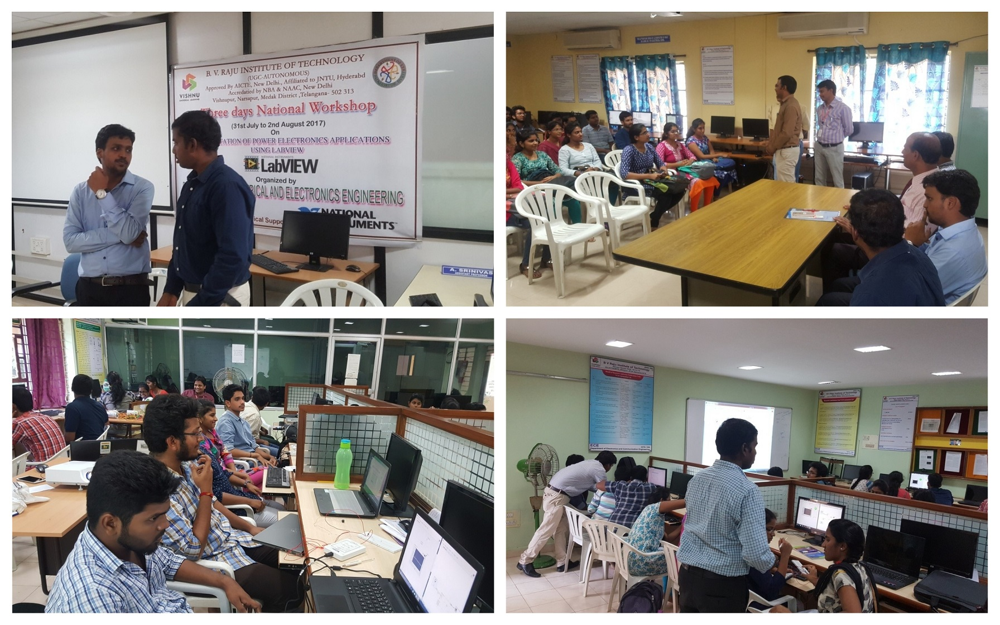

B.V. Raju Institute of Technology (BVRIT) is an engineering college established in 1997 in Vishnupur, Narsapur, Medak, Telangana State, India. BVRIT is affiliated with Jawaharlal Nehru Technological University, Hyderabad(JNTUH), University Grants Commission (India)(UGC Autonomous), accredited by the National Board of Accreditation(NBA) and National Assessment and Accreditation Council (NAAC). It is one of the educational institutes of the Sri Vishnu Educational Society. The founding chairman of the Sri Vishnu Educational Society is Padmabhushan Dr BV Raju and current chairman is Sri K V VishnuRaju.
   
Click here for campus location
BVRITN provides 13 Under Graduation courses.
click here for undergraduation courses 
BVRITN provides 7 Post Graduation courses.
click here for postgraduation courses 